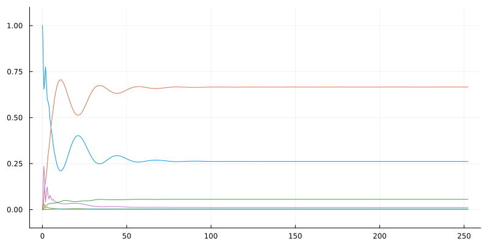

┌ Info: Precompiling OpticalBlochEquations [691d0331-80d3-41b1-b293-7891a6f4a14f]
└ @ Base loading.jl:1662Force curves versus velocity for an \(F_1 \rightarrow F_1\) system
In this notebook, we simulate cooling for an \(F_1 \rightarrow F_1\) system. In particular, we reproduces figures from NJP 18, 123017 (2016).
We’ll first define a few physical constants needed for this simulation.
Using QuantumStates, we can create both the ground states (F1_lower) and excited states (F1_upper) using the AngularMomentumState type, which is a state type of “bare” angular momentum states \(|F,m\rangle\).
The transition dipole moments d and the magnetic moments d_m are calculated using QuantumStates.get_tdms_two_bases:
d_ge = get_tdms_two_bases(ground_states, excited_states, TDM)
d = [
[zeros(length(ground_states), length(excited_states), 3); permutedims(d_ge, (2,1,3))] [d_ge; zeros(length(excited_states), length(ground_states), 3)]
]
d_m_ge = get_tdms_two_bases(ground_states, excited_states, TDM_magnetic)
d_m = [
[d_m_ge; zeros(length(ground_states), length(excited_states), 3)] [zeros(length(excited_states), length(ground_states), 3); d_m_ge]
]
;We now define the lasers, along with the detuning \(\Delta\) and saturation \(s\). Note that all lasers have the polarization \(\sigma^+\) in their own frame, which is rotated to the \(\hat{z}\) axis using rotate_pol. (Technically, the rotation is performed from the \(\hat{z}\) axis to the axis of the given laser’s \(k\)-vector because the variable \(\sigma^+\) is defined relative to the \(\hat{z}\) axis.)
# Laser parameters
Δ = -2.5Γ
s = 2.0
# Frequency of the lasers (in angular frequency units)
ω_F1_to_F1 = 2π * (F1_upper[1].E - F1_lower[1].E) + Δ
k̂ = +x̂; ϵ = rotate_pol(σ⁺, k̂); laser1 = Laser(k̂, ϵ, ω_F1_to_F1, s)
k̂ = -x̂; ϵ = rotate_pol(σ⁺, k̂); laser2 = Laser(k̂, ϵ, ω_F1_to_F1, s)
k̂ = +ŷ; ϵ = rotate_pol(σ⁺, k̂); laser3 = Laser(k̂, ϵ, ω_F1_to_F1, s)
k̂ = -ŷ; ϵ = rotate_pol(σ⁺, k̂); laser4 = Laser(k̂, ϵ, ω_F1_to_F1, s)
k̂ = +ẑ; ϵ = rotate_pol(σ⁺, k̂); laser5 = Laser(k̂, ϵ, ω_F1_to_F1, s)
k̂ = -ẑ; ϵ = rotate_pol(σ⁺, k̂); laser6 = Laser(k̂, ϵ, ω_F1_to_F1, s)
lasers = [laser1, laser2, laser3, laser4, laser5, laser6]
;Before computing the force across a range of velocities, let’s first check that our simulation produces reasonable results for a specific set of parameters:
# `Particle` type defines the starting position `r0` and velocity `v` used for the simulation
particle = Particle()
particle.r0 = [0.0, 0.0, 0.0]
particle.v = [0.0, 0.0, 0.2]
# Define the density matrix `ρ0` at t = 0
ρ0 = zeros(ComplexF64, length(states), length(states))
ρ0[1,1] = 1.0
# `freq_res` designates the resolution used for the frequencies and velocity used in the simulation
freq_res = 1e-1
p = obe(ρ0, particle, states, lasers, d, d_m, true, true, λ, Γ, freq_res)
# Define the end time `t_end` of the simulation
t_end = 4p.period+1
tspan = (0., t_end)
prob = ODEProblem(ρ!, p.ρ0_vec, tspan, p)
; 20.770447 seconds (36.18 M allocations: 3.983 GiB, 3.04% gc time, 99.98% compilation time)using Plots
plot_us = sol.u
plot_ts = sol.t
n_states = size(p.ρ_soa, 1)
plot(size=(800, 400), ylim=(-0.1, 1.1), legend=nothing)
for i in 1:n_states
state_idx = n_states*(i-1) + i
plot!(plot_ts, [real(u[state_idx]) for u in plot_us])
end
plot!()
Laser cooling force versus velocity
function prob_func!(p, scan_values, i)
# Update velocity and position
p.v .= (scan_values.v[i], 0.0, 0.1) #sample_direction(inner_config.v[i])
p.r0 .= rand(uniform_dist, 3)
return nothing
end
function param_func(p, scan_values, i)
return round(norm(p.v), digits=3)
end
function output_func(p, sol)
f = p.force_last_period[1]
return f
end
;t_end = 4p.period+1
tspan = (0., t_end)
prob = ODEProblem(ρ!, p.ρ0_vec, tspan, p, save_on=false)
vs = repeat(0:0.1:8, 100)
scan_values = (v = vs,)
@time scan_params, forces = force_scan(prob, scan_values, prob_func!, param_func, output_func);Progress: 100%|█████████████████████████████████████████| Time: 0:00:07 7.622535 seconds (9.40 M allocations: 630.333 MiB, 1.15% gc time, 49.15% compilation time)